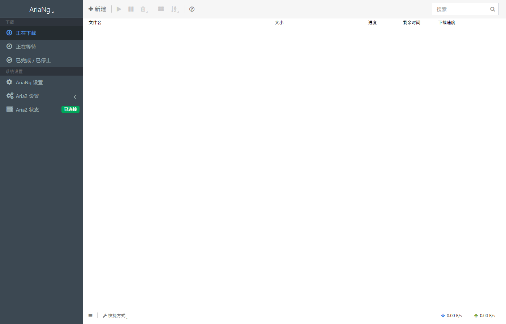

一套免安装的 Windows 下载器：aria2 后台引擎 + AriaNg 网页面板 + 浏览器扩展接管。
用来替代 IDM 或浏览器自带下载，支持多线程加速、断点续传、直链 / 磁力 / 种子。
127.0.0.1，不上传任何数据
D:\Aria2。
不要放在 C:\Program Files——权限不足，安装脚本写不进配置文件。路径里也尽量不要有空格。
install.bat。它会：
conf\aria2.conf、panel.bat、conf\panel-url.txtAria2-Explorer-配置.json（给浏览器扩展导入用）edge://extensions，搜并安装 Aria2 Explorer（作者 alexhua）microsoftedge.microsoft.com/addons/detail/ngojgbdekanmijaphecgpmfoegoanffiAria2-Explorer-配置.json导入后 RPC 地址和密钥就都配好了，不用手填。
| 想做的事 | 怎么做 |
|---|---|
| 启动 | 双击桌面「Aria2 下载器」（后台启动引擎 + 打开面板） |
| 只开面板 | 双击桌面「Aria2 面板」 |
| 下载 | 直接在网页上点下载链接，扩展会把任务交给 aria2 |
| 临时不接管 | 按 Alt + A 关闭自动拦截，再按一次恢复 |
| 看进度 | 点浏览器工具栏的 A2E 图标 → 打开面板 |
| 停止引擎 | 双击 stop.bat |
| 看日志 | 双击 view-log.bat（实时滚动） |
下载完成的文件默认在 安装目录\Downloads。
这是接管式下载的正常表现：扩展拦下链接后直接交给后台 aria2，浏览器自己并没有发起下载，
所以 Edge / Chrome 的下载气泡、edge://downloads 里不会有记录。
想看任务请用面板或扩展图标；如果确实需要浏览器原生下载（例如小文件想留记录），按 Alt + A 临时关掉拦截。
Aria2下载器\
├─ install.bat 安装（首次运行一次）
├─ start.bat 启动引擎并打开面板（日常用这个）
├─ panel.bat 只打开面板（安装后生成）
├─ stop.bat 停止引擎
├─ view-log.bat 查看实时日志
├─ autostart-on.bat 设置开机后台自启
├─ autostart-off.bat 取消开机自启
├─ uninstall.bat 清理自启项与快捷方式
├─ daemon.vbs 无窗口启动 aria2（被其它脚本调用）
├─ aria2c.exe aria2 引擎 1.37.0
├─ aria-ng\index.html AriaNg 面板（离线单文件）
├─ conf\
│ ├─ aria2.conf 运行配置（安装时生成，可自己改）
│ ├─ aria2.conf.template 配置模板
│ ├─ aria2.session 任务队列（未完成的任务存在这里）
│ ├─ aria2.log 运行日志
│ └─ panel-url.txt 面板地址（含密钥）
├─ Downloads\ 下载目录
├─ Aria2-Explorer-配置.json 浏览器扩展的导入文件
├─ 使用说明.html / .md 本文档
└─ LICENSES\ 开源许可先看 Downloads 目录里文件是不是已经在长大——多数时候它正在后台下载，只是浏览器没有提示。
再双击 view-log.bat，能看到 Download complete: ... 就说明一切正常。
errorCode=1 + unreachable network？这是 IPv6 造成的：机器有 IPv6 地址、却没有 IPv6 出口（装过 VPN、Radmin、虚拟网卡都可能这样）， aria2 会先尝试 IPv6 连接并被立刻拒绝，于是每个任务都失败。
新版配置里已默认写入 disable-ipv6=true；老配置请自己在
conf\aria2.conf 里补上这一行，然后 stop.bat → start.bat。
说明密钥不匹配。重新运行一次 install.bat（会沿用原密钥并重写面板地址），
或直接双击 panel.bat，而不是手动打开 aria-ng\index.html。
手动打开时需要在设置里填：协议 HTTP、主机 127.0.0.1、端口 6800、
密钥见 conf\aria2.conf 里的 rpc-secret=。
errorCode=18？下载目录路径不合法，最常见的原因是路径首尾带了引号（从资源管理器「复制为路径」粘进来的）。 在扩展设置里把「下载目录」改成不带引号的路径，或直接留空使用默认目录。
conf\aria2.conf 调大 split、max-connection-per-server（默认各 16）stop.bat 再 start.bat改 conf\aria2.conf 里的 dir= 那一行，然后重启。注意路径不要加引号。
改 conf\aria2.conf 里的 rpc-listen-port=，然后重新运行一次 install.bat——
它会沿用你改过的端口和原密钥，重写面板地址。浏览器扩展里的 RPC 地址也要同步改成新端口。
双击 autostart-on.bat（只是往启动文件夹放一个快捷方式，不写注册表）；取消用 autostart-off.bat。
conf\aria2.log 里会有 Failed to bind 之类的报错。换端口见上一条。
双击 uninstall.bat 清理自启项和快捷方式，然后直接删掉整个文件夹。
已下载的文件在 Downloads 里，删之前自己确认。
aria2c.exe 是 aria2 官方构建（GPLv2），部分杀软对「带 RPC 服务的下载器」比较敏感，属误报。
介意的话可以自行到 github.com/aria2/aria2/releases 下载官方版本替换，配置文件不用动。
127.0.0.1（rpc-listen-all=false），局域网内其它机器连不上conf\aria2.conf 的 rpc-secret=install.bat 会生成他自己的密钥，互不影响conf\aria2.conf 发给别人（里面是你的密钥，虽然只对本机有效）直接把这个文件夹（未运行过 install.bat 的状态）压缩成 zip 发给对方即可。
对方解压后双击 install.bat，会生成属于他自己的密钥和路径，不会和你冲突。
如果已经安装过再去分享，记得先删掉 conf\aria2.conf、conf\panel-url.txt、
conf\aria2.session、panel.bat、Aria2-Explorer-配置.json 这几个生成物。
aria2.github.io，完整许可见 LICENSES\aria2-COPYING.txtgithub.com/mayswind/AriaNg，见 LICENSES\AriaNg-LICENSE.txtgithub.com/alexhua/Aria2-Explorer